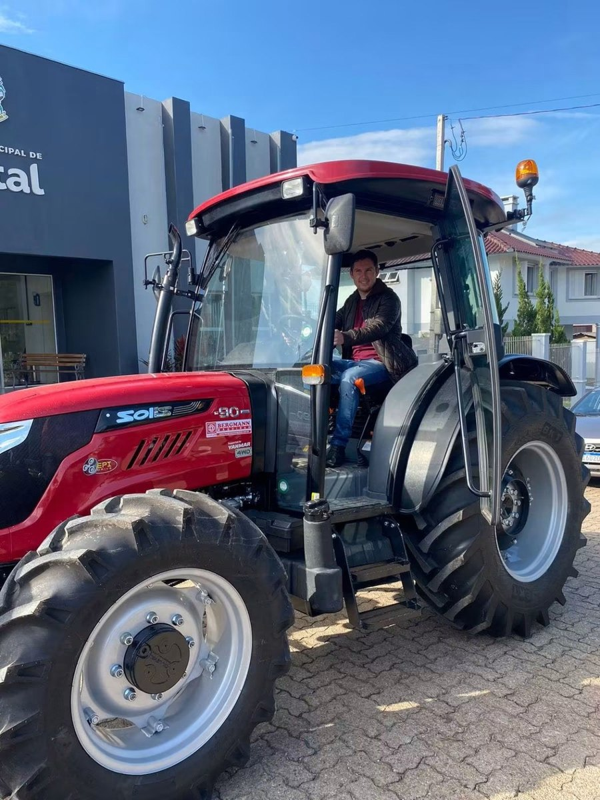
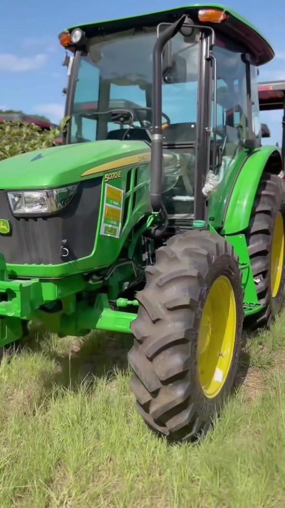

01 / EDUCAÇÃO
Aluno Nota Dez
A Lei Municipal nº 1.553/2021 valoriza o mérito dos estudantes. O mandato acompanha a pauta e cobra sua efetiva aplicação.
Educação e reconhecimentoUm mandato próximo das pessoas, com diálogo, fiscalização, projetos e tecnologia para fortalecer a participação em Cristal.
Da cidade ao interior, compromisso com toda a comunidade.
O trabalho de um vereador começa ouvindo quem vive os desafios de cada bairro e comunidade. É assim que transformamos demandas em encaminhamentos e acompanhamento.
Conte o que sua comunidade precisaUm canal digital que aproxima o cidadão do mandato. A proposta é facilitar o envio de demandas, organizar solicitações e dar mais transparência ao acompanhamento.
Relate a demanda da comunidade e inclua informações para ajudar na identificação do problema.
O sistema utiliza protocolo e mecanismos de acesso individual para proteger os dados.
Consulte as informações disponíveis e as atualizações de sua solicitação.
Aplicativo em teste fechado na Google Play. A instalação está disponível apenas para participantes autorizados.


Projetos, cobranças, fiscalização e diálogo para atender às necessidades reais da população.
A Lei Municipal nº 1.553/2021 valoriza o mérito dos estudantes. O mandato acompanha a pauta e cobra sua efetiva aplicação.
Educação e reconhecimentoAcompanhamento das demandas de saúde das comunidades, incluindo pedidos por melhorias no acesso ao atendimento.
Atenção às pessoasPedidos de providência e fiscalização de condições das vias, sinalização e iluminação na cidade e no interior.
Da cidade ao interiorFotografias dos equipamentos já cadastrados no Mandato em Ação, acompanhadas de contexto e da situação dos registros.
 INFRAESTRUTURA • 2025
INFRAESTRUTURA • 2025
Articulação de recursos para equipamentos de apoio aos serviços municipais. A fotografia disponível é da carreta-prancha; os comprovantes e os dados da lâmina ainda serão vinculados.

AGRICULTURA • 2023Registro de articulação de emenda para aquisição de equipamentos agrícolas, com fotografia do trator.
Comprovantes a vincular Ver detalhes
AGRICULTURAFotografia vinculada ao registro de máquinas e equipamentos para atendimento aos produtores rurais.
Documentação em organização Ver detalhesInformações sobre iniciativas, acontecimentos e reconhecimento do trabalho desenvolvido.
O projeto foi reconhecido na categoria Boas Práticas no Poder Público. A Cristal Web Rádio destacou a premiação e entrevistou Wagner sobre a iniciativa.
Sou Wagner Tomaszewski, vereador em Cristal. Acredito em um mandato participativo, com presença nas comunidades, escuta ativa e responsabilidade na busca por soluções.
Quero usar a tecnologia para aproximar ainda mais o trabalho do vereador das pessoas, sem abrir mão da conversa direta e do acompanhamento de cada demanda.
Tem uma sugestão, uma demanda ou quer acompanhar o trabalho do mandato? Entre em contato pelos nossos canais.